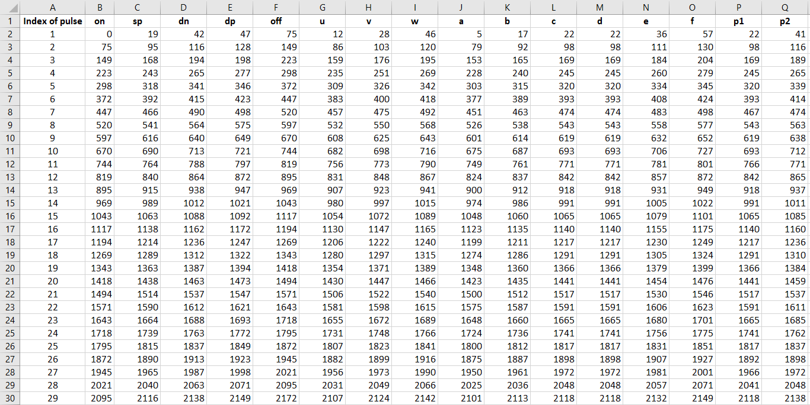
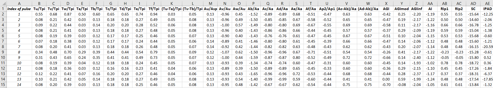
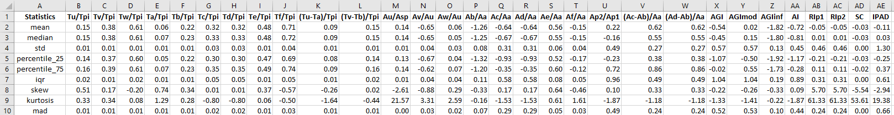

Comprehensive PPG Analysis
Colab NotebookIn this tutorial we will learn how to extract biomarkers from a photoplethysmogram (PPG) signal.
Our objectives are to:
Detect the standard fiducial points on PPG pulse waves
Calculate pulse wave biomarkers from the fiducial points
Saving data in different data format
Setup
Import Python packages:
Install the pyPPG toolbox for PPG analysis
!pip install pyPPG
Import required components from pyPPG
from pyPPG import PPG, Fiducials, Biomarkers
from pyPPG.preproc import Preprocessing
from pyPPG.datahandling import load_data, plot_fiducials, save_data
import pyPPG.fiducials as FP
import pyPPG.biomarkers as BM
import pyPPG.ppg_sqi as SQI
Import other packages
import numpy as np
import sys
import json
import pandas as pd
Setup input parameters:
The following input parameters are inputs to the pyPPG.example module (see the documentation for further details).
data_path = "PPG_MAT_sample.mat" # the path of the file containing the PPG signal to be analysed
fs = 100 # the sampling frequency
start_sig = 0 # the first sample of the signal to be analysed
end_sig = -1 # the last sample of the signal to be analysed (here a value of '-1' indicates the last sample)
correct = True # whether or not to apply correction to the detected fiducial points
filtering = True # whether or not to filter the PPG signal
savingfolder = 'temp_dir'
savingformat = 'csv'
Loading a raw PPG signal:
# Load the raw PPG signal
signal = load_data(data_path, fs, start_sig, end_sig)
Plot the raw PPG signal:
# import plotting package
from matplotlib import pyplot as plt
# setup figure
fig, ax = plt.subplots()
# create time vector
t = np.arange(0, len(signal.v))/signal.fs
# plot raw PPG signal
ax.plot(t, signal.v, color = 'blue')
ax.set(xlabel = 'Time (s)', ylabel = 'raw PPG')
# show plot
plt.show()
PPG signal processing
Prepare the PPG data:
Filter the PPG signal and obtain first, second and third derivatives (vpg, apg, and jpg respectively).
signal.ppg, signal.vpg, signal.apg, signal.jpg = Preprocessing(signal, filtering=filtering)
Plot the derived signals
# setup figure
fig, (ax1,ax2,ax3,ax4) = plt.subplots(4, 1, sharex = True, sharey = False)
# create time vector
t = np.arange(0, len(signal.ppg))/signal.fs
# plot filtered PPG signal
ax1.plot(t, signal.ppg)
ax1.set(xlabel = '', ylabel = 'PPG')
# plot first derivative
ax2.plot(t, signal.vpg)
ax2.set(xlabel = '', ylabel = 'PPG\'')
# plot second derivative
ax3.plot(t, signal.apg)
ax3.set(xlabel = '', ylabel = 'PPG\'\'')
# plot third derivative
ax4.plot(t, signal.jpg)
ax4.set(xlabel = 'Time (s)', ylabel = 'PPG\'\'\'')
# show plot
plt.show()
Store the derived signals in a class
# Create a PPG class
signal.filtering = filtering
signal.correct = correct
s = PPG(signal)
Identify fiducial points:
Initialise the fiducials package
fpex = FP.FpCollection(s)
Extract fiducial points
fiducials = fpex.get_fiducials(s, correct=True)
Display the results
print("Fiducial points:\n",fiducials + s.start_sig) # here the starting sample is added so that the results are relative to the start of the original signal (rather than the start of the analysed segment)
Plot fiducial points:
# Create a fiducials class
fp = Fiducials(fiducials)
# Plot fiducial points
plot_fiducials(s, fp, savingfolder)
- PPG fiducial points

Calculate PPG SQI:
# Get PPG SQI
ppgSQI = round(np.mean(SQI.get_ppgSQI(s.ppg, s.fs, fp.sp)) * 100, 2)
print('Mean PPG SQI: ', ppgSQI, '%')
Calculate PPG biomarkers:
# Init the biomarkers package
bmex = BM.BmCollection(s, fp)
# Extract biomarkers
bm_defs, bm_vals, bm_stats = bmex.get_biomarkers()
tmp_keys=bm_stats.keys()
print('Statistics of the biomarkers:')
for i in tmp_keys: print(i,'\n',bm_stats[i])
# Create a biomarkers class
bm = Biomarkers(bm_defs, bm_vals, bm_stats)
Save PPG data:
# Save PPG struct, fiducial points, biomarkers
fp_new = Fiducials(fp.get_fp() + s.start_sig) # here the starting sample is added so that the results are relative to the start of the original signal (rather than the start of the analysed segment)
save_data(s, fp_new, bm, savingformat, savingfolder)
- Extracted fiducial points
- 
- Extracted biomarkers
- 
- Biomarkers statistics
- 
- Biomarkers definitions